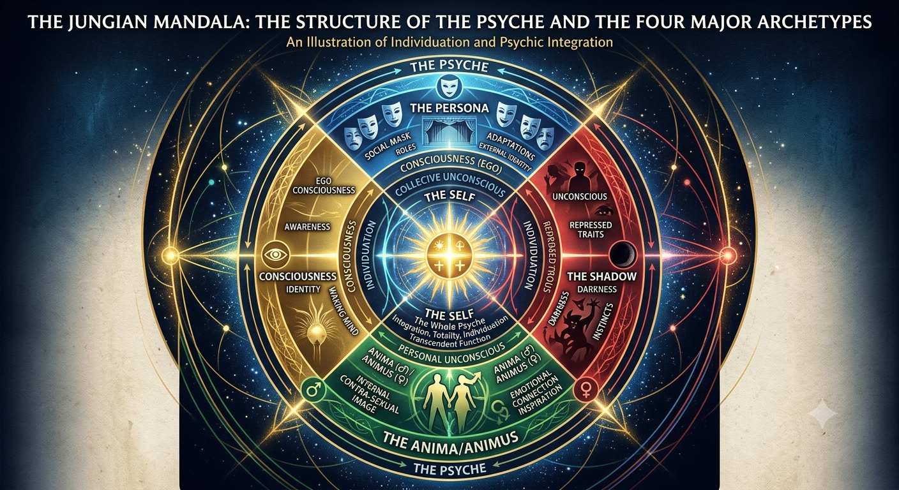
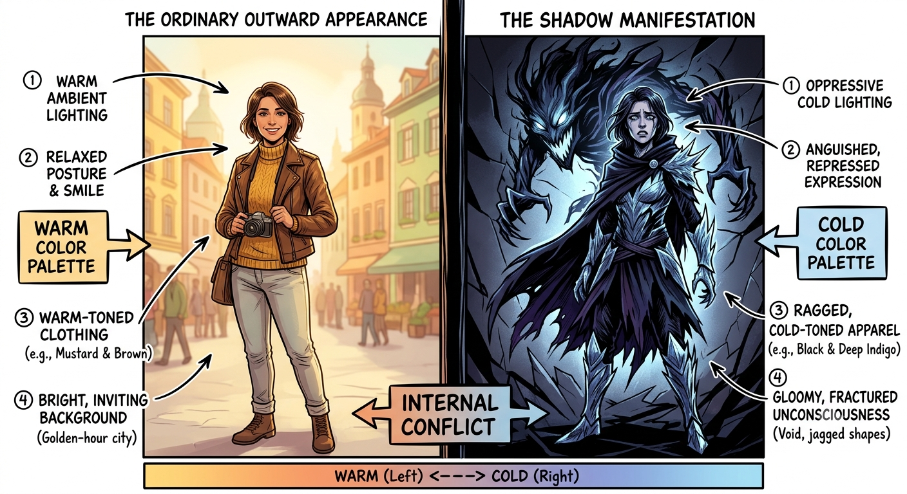
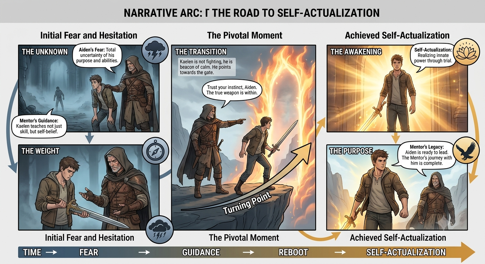
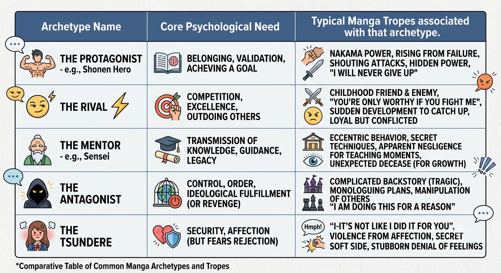

In the realm of modern animation and literature, characters often resonate with audiences not by chance, but by tapping into the "collective unconscious"—a concept pioneered by Carl Jung. These archetypes are universal patterns of behavior and personality that transcend culture and time. By mapping these psychological frameworks onto anime and manga characters, creators can generate narratives that feel profoundly familiar, even in worlds of fiction.

Characters in anime are rarely flat; they serve as vessels for human complexity. When a story captures our attention, it is often because the character’s internal conflict mirrors our own developmental struggles. Understanding these archetypes allows us to predict, analyze, and even appreciate the "why" behind an antagonist’s descent or a hero’s rise.
The Shadow represents the repressed, darker side of a personality—the traits a character refuses to acknowledge. In many high-stakes manga series, the "villain" is not inherently evil but represents a manifestation of the protagonist’s own unresolved trauma or denied impulses.

The Persona is the social face the character presents to the world. It is the role they play to survive within their societal structure. Whether it is a student hiding their true power or a leader concealing their vulnerability, the tension between the "Public Persona" and the "True Self" is a primary engine for plot development
The Hero represents the quest for self-actualization, while the Sage provides the necessary wisdom to navigate that path. These archetypes are essential for the "monomyth" structure often found in shonen and seinen manga, where growth is measured by the hero’s capacity to integrate their experiences into a coherent identity.

When analyzing these works for professional purposes, it is vital to avoid surface-level observation. Instead, focus on the "Internal Arc"—how the character’s psychological needs shift from the beginning to the end of the narrative. This methodology transforms a simple critique into a deep dive into human behavioral psychology.
